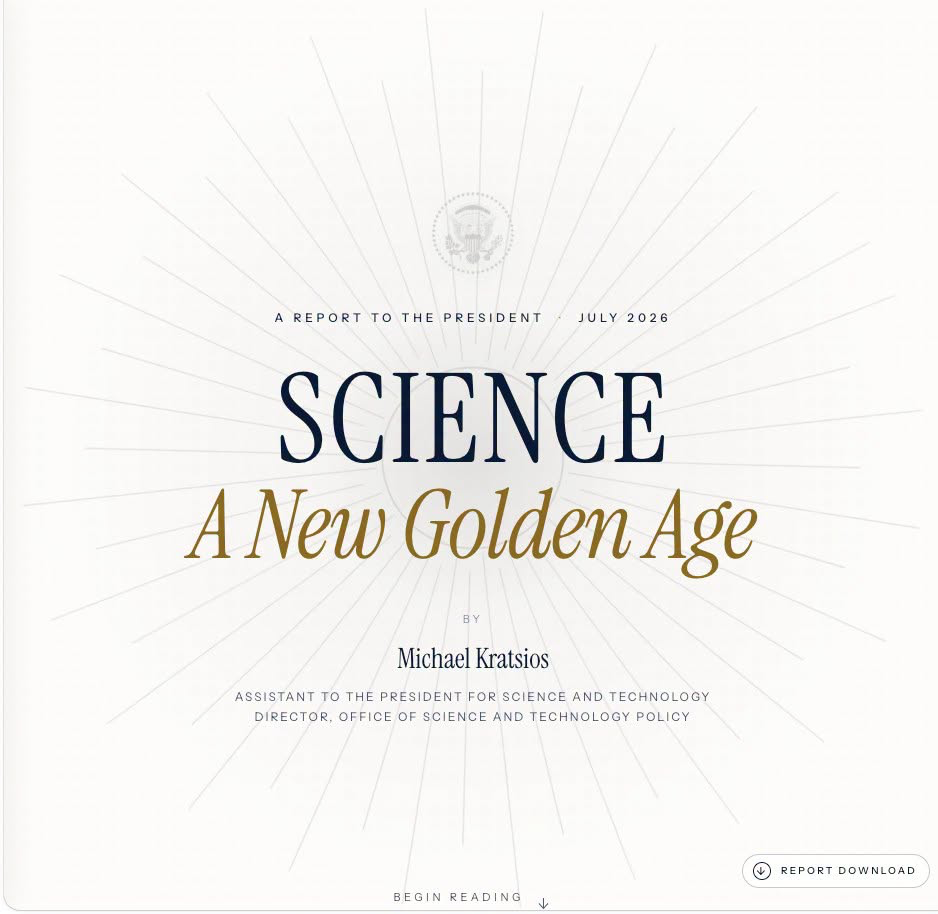
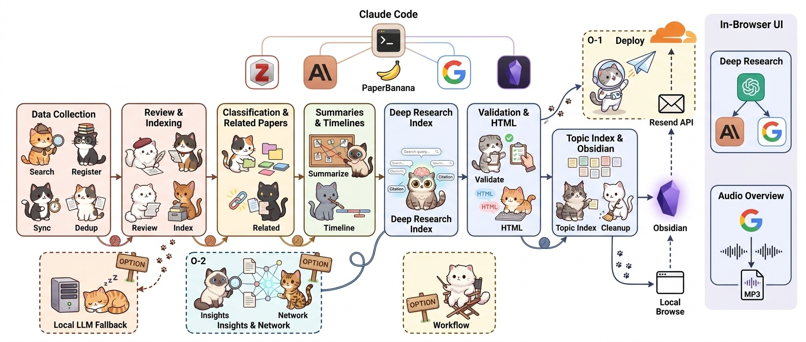
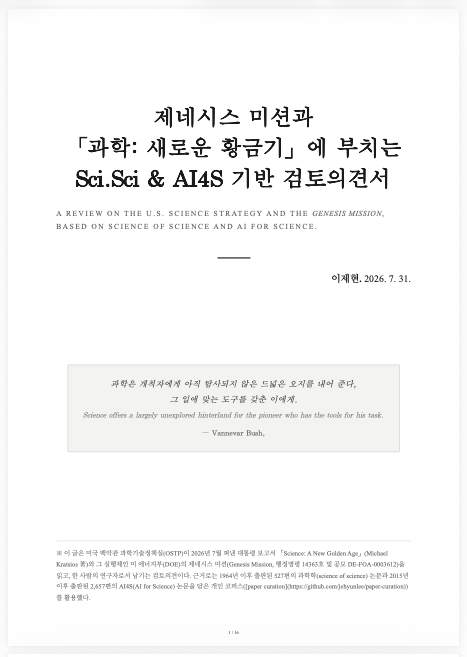

- 지난 7월 21일, 미 백악관은 정책보고서를 공개했습니다.
- “Science: A New Golden Age” 라는 이름의 보고서에는 Genesis Mission의 방향이 담겨있습니다.
- 학술적인 관점에서 보고서를 살펴보고, 기존 연구결과와의 일치여부를 살펴보았습니다.
- 검토보고서 다운로드
1. Science: A Golden Age
Science: A Golden Age
The Genesis Mission: Transforming Science and Energy with AI

- 7월 21일, 미 백악관 과학기술정책실이 Science: A New Golden Age라는 이름의 정책보고서를 발간했습니다.
- https://www.whitehouse.gov/science/
- 이 보고서는 트럼프 대통령의 질문 세 개로 시작합니다.
: 이후 번역본은 AI 번역이며, 정확한 표현은 원문을 참고하시기 바랍니다.
오늘날 해외의 경쟁자들은 경이의 창조자이자 지식의 생산자로서 미국이 차지한 위치를 빼앗으려 하고 있습니다. 우리는 지난 세기에 우리를 그토록 멀리 나아가게 했던 절박함을 되찾아야 합니다. (중략) 저는 미국 국민을 위해 아래의 과제들에 답할 것을 귀하에게 맡깁니다.
첫째: 미국은 인공지능, 양자정보과학, 원자력 기술과 같은 핵심·신흥 기술에서 어떻게 세계 최고의 지위를 확보하고, 잠재적 적대 세력에 대한 우위를 유지할 수 있습니까?
둘째: 진리를 추구하고, 행정 부담을 줄이며, 연구자들이 획기적 발견을 이룰 수 있도록 힘을 실어 주는 방식으로 미국의 과학기술 체제를 어떻게 재활성화할 수 있습니까?
셋째: 과학적 진보와 기술 혁신이 어떻게 경제 성장을 촉진하고 모든 미국인의 삶을 개선하도록 할 수 있습니까?
- 원문 PDF 기준 123페이지에 달하는 분량의 보고서 전체에 걸쳐 이 질문에 대한 답변이 비장한 문체로 씌여있습니다.
- 서두에 나온 트럼프 대통령의 질문에 대한 보고서의 답을 정리하면 이렇습니다.
과학적 발견을 미국 내 실험·제조·상용화 역량과 긴밀하게 연결합니다.
기초연구 논문을 많이 내는 것만으로는 기술 패권을 지킬 수 없으며, 발견 → 실증 → 제조 → 확산의 전 과정을 국내에 갖춰야 합니다.기관과 절차가 아니라 연구자와 대담한 아이디어를 중심으로 연구지원 체계를 재설계합니다.
관료적 안정성과 평균적인 합의보다 연구자의 자율성, 위험 감수, 제도 실험과 성과 책임을 중시해야 합니다.과학을 제조업·숙련기술·지역경제 및 직업교육과 다시 연결해야 합니다.
과학의 혜택을 소비자가 새로운 제품을 쓰는 데서 끝내지 않고, 국내 제조업 일자리, 숙련 형성, 지역 산업 생태계와 소득 증가로 연결해야 합니다.
2. Science of Science & AI for Science
- 이 보고서 내용이 낯이 익었습니다.
- 몇 주 전, 공부를 하겠다고 Dashun Wang 그룹 논문 80편을 비롯해 Science of Science 논문 130여편을 훑은 적이 있습니다.
- 이 때 머리 속에 넣어뒀던 내용들이 곳곳에 등장하더군요.
- 그런데 일부는 다른 의미로 낯익었습니다.
- 여러 논문들에서 권장하는 방향과 반대 방향으로 씌여있었기 때문입니다.
- 전체적으로는 AI for Science에 대한 내용이었습니다.
- 정책보고서인 만큼 구체적인 내용은 생략이 되어 있었지만, 너무 낙관적인 내용만 있어서 냉정하게 현실을 짚을 필요를 느꼈습니다.

- 제가 모아둔 논문들을 이용해 보고서를 검토해보기로 했습니다.
- science of science 논문 527편과 AI for Science 논문 2,657편이 그 대상입니다.
- 논문 검토엔 Claude Code와 Codex가 힘을 보탰습니다.
3. Review

- 본격적으로 리뷰를 실행한 결과, 보고서의 진단 중 상당 부분은 데이터로 뒷받침됩니다.
- 돈과 사람을 더 넣어도 파괴적 혁신은 오히려 줄고 있다는 지적,
- 과제 계획서가 아니라 사람에게 길게 투자하라는 제안,
- 기득권이 새 아이디어의 앞을 막는다는 관찰은 실제 논문들에서 보고한 현상입니다.
- 다만 기존 연구에 비추어 볼 때 동의하기 어려운 부분도 존재합니다.
- 자율실험실에는 검증절차가 동반되어야 합니다:
연구결과의 생성 비용은 기하급수적으로 떨어졌지만 검증 비용은 그대로입니다. - 외국인 인재에 대한 관점도 다릅니다: 논문에서는 다양성을 늘려야 한다고 말하고 있습니다.
- 지역 클러스터는 성공할까요?: 논문에서는 맨해튼 프로젝트처럼 한 곳에 모여야 한다고 합니다.
- 중요한 것은 우리가 어떻게 행동할지일 것입니다.
- 우리의 연구 토양을 이해하고 적절한 변형이 필요합니다.
- 미국도 자신들의 상황에 맞게 선택적으로 연구결과를 적용했듯이요.
- 검토보고서는 여기에서 다운로드할 수 있습니다.